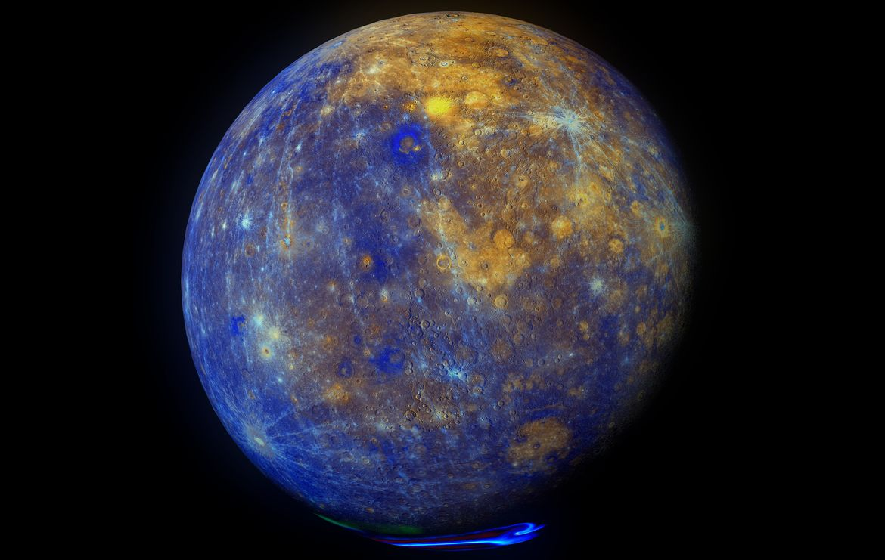
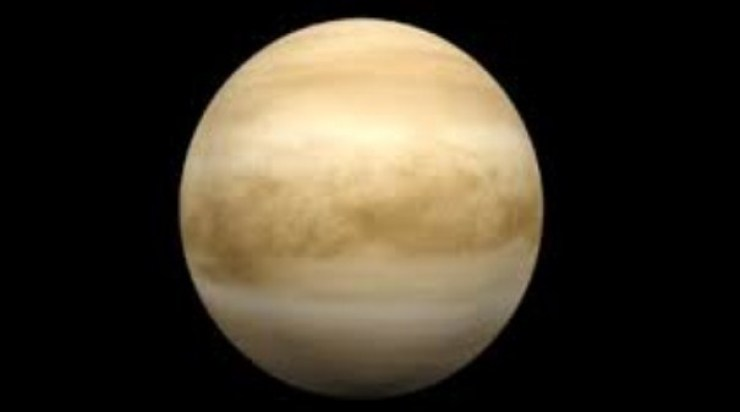
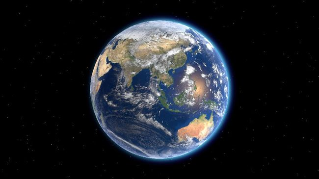

3 PLANET TERDEKAT DENGAN MATAHARI

PLANET MERKURIUS
Merkurius adalah planet terkecil di Tata Surya sekaligus yang terdekat dari Matahari. Periode revolusi planet ini yang terpendek dari semua planet di Tata Surya, yakni 87,79 hari. Planet ini dinamai menurut nama dewa Merkurius, sang pembawa pesan para dewa dalam mitologi Romawi. Satu tahun di Merkurius hanya 88 hari.

PLANET VENUS
Venus adalah planet terdekat kedua dari Matahari setelah Merkurius. Planet ini mengorbit Matahari selama 224,7 hari Bumi. Venus tidak memiliki satelit alami dan dinamai dari dewi cinta dan kecantikan dalam mitologi Romawi. planet ini merupakan objek alami tercerah di langit malam, yang cukup cerah untuk menghasilkan bayangan.

PLANET BUMI
Bumi adalah planet ketiga dari Matahari yang merupakan planet terpadat dan terbesar kelima dari delapan planet dalam Tata Surya. Bumi juga merupakan planet terbesar dari empat planet kebumian Tata Surya. Bumi terkadang disebut dengan dunia atau Planet Biru. Bumi terbentuk sekitar 4,54 miliar tahun yang lalu.